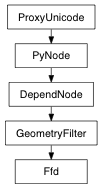

Adds a piece of geometry to the deformation.
| Parameters: |
|
|---|
Derived from api method maya.OpenMayaAnim.MFnLatticeDeformer.addGeometry
Undo is not currently supported for this method
This returns the base version of the lattice that describes the region of space deformed by the lattice. The returned base lattice is a shape in the DAG and can be accessed using the MFnDagNode function set.
| Return type: | PyNode |
|---|
Derived from api method maya.OpenMayaAnim.MFnLatticeDeformer.baseLattice
This returns the deformed version of the lattice. The deformed lattice is a shape in the DAG and should be modified using the MFnLattice function set.
| Return type: | PyNode |
|---|
Derived from api method maya.OpenMayaAnim.MFnLatticeDeformer.deformLattice
The geometry affected by this deformer is packed into the provided list of MObjects. Each of the MObjects will be a DAG node that has geometry.
| Return type: | PyNode list |
|---|
Derived from api method maya.OpenMayaAnim.MFnLatticeDeformer.getAffectedGeometry
Retrieve the number of divisions in each of the X, Y, and Z directions. The number of divisions specifies the resolution of the lattice.
| Return type: | (int, int, int) |
|---|
Derived from api method maya.OpenMayaAnim.MFnLatticeDeformer.getDivisions
Removes a piece of geometry from the deformation.
| Parameters: |
|
|---|
Derived from api method maya.OpenMayaAnim.MFnLatticeDeformer.removeGeometry
Undo is not currently supported for this method
This method resets the deformed lattice to match the base lattice.
| Parameters: |
|
|---|
Derived from api method maya.OpenMayaAnim.MFnLatticeDeformer.resetLattice
Undo is not currently supported for this method
Set the number of divisions in each of the X, Y, and Z directions. The number of divisions specifies the resolution of the lattice.
| Parameters: |
|
|---|
Derived from api method maya.OpenMayaAnim.MFnLatticeDeformer.setDivisions